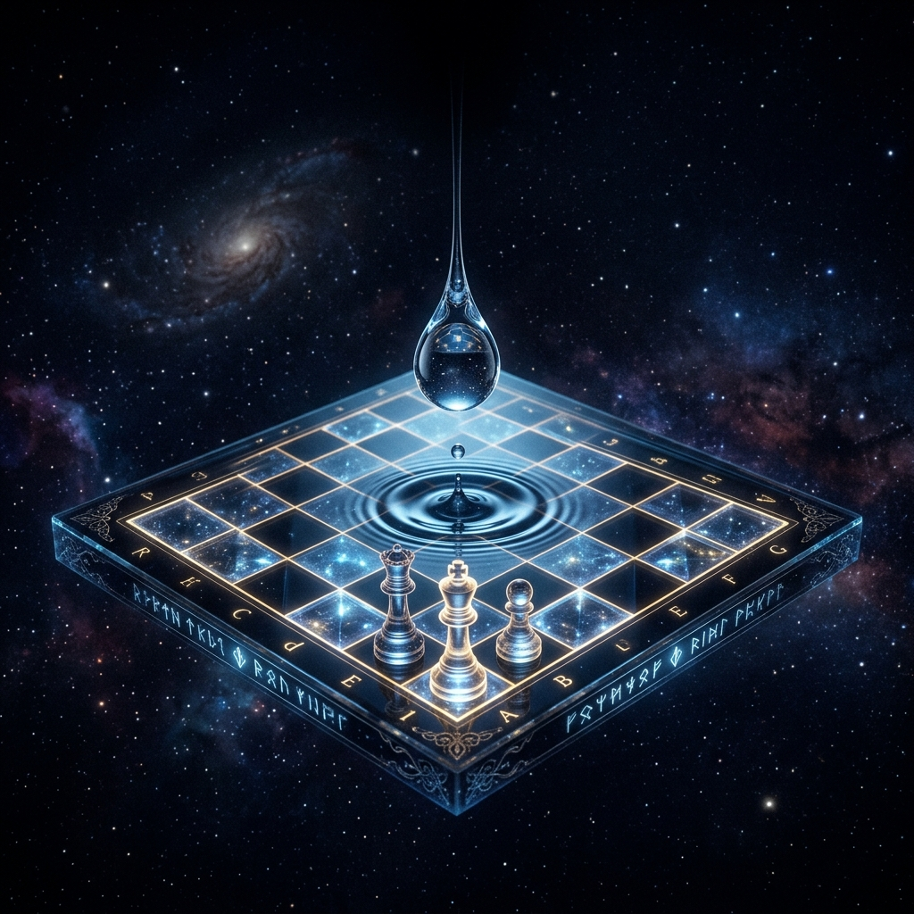
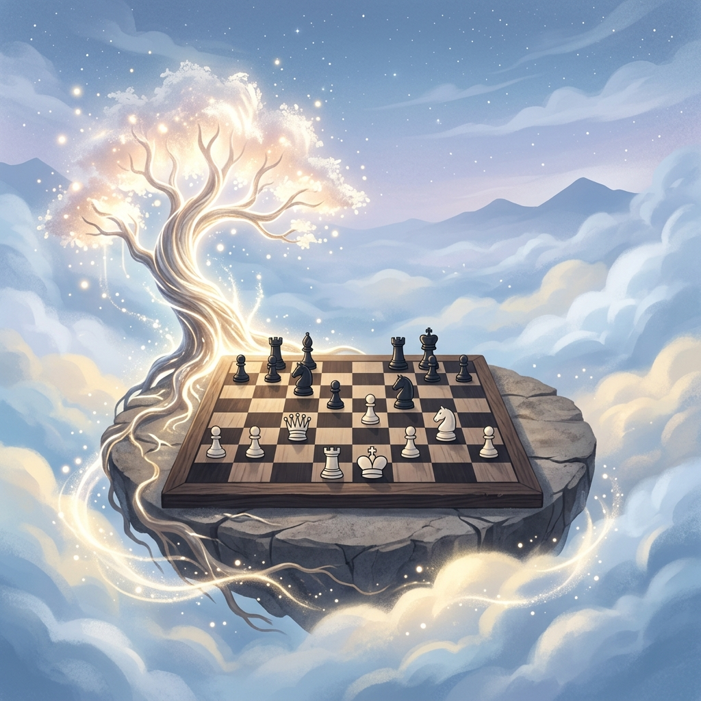

Table of Contents
目录
- 1. Life Trajectory / 1. 生命轨迹

Click anywhere to begin
点击屏幕任意位置开始
Before time had a name, everything followed the ancient and slow laws of nature. As a drop of water fell, I saw a chessboard already filled with black and white pieces. It followed a set order, and no one could trace back to where this game of chess began, nor could anyone go back to the first piece.
在时间尚未得名之前，万物皆遵循着古老而缓慢的自然法则。一滴水珠坠落之际，我望见一方棋盘已然落满黑白棋子。棋局自有其既定秩序，无人能追溯这场对弈的开端，更无人能回到落子的最初一刻。

These naturally formed pieces, sometimes fast, sometimes slow, were like turning points of fate. It was cold yet beautiful, quietly waiting to be named and experienced.
I could see the trajectory of the opponent's pieces was placed on the board, but I couldn't predict where the next piece would land. I wanted the opponent to retract the previous piece, but this was not allowed. I wanted to use divination to predict the next piece's landing position. However, the divination results were too abstract, and I could only presume the general area where the piece would land. Therefore, I no longer had the energy to figure out where the opponent's pieces would eventually land.
Once a piece was placed, it could not be changed. Even if I take no action, the water drop would turn into a new piece, constantly driving the changes on the board. Silence and waiting themselves were also a kind of choice. No matter what choice I made, the world was moving towards the unknown, so I had to respond. Selecting black or white, and where to place them, would bring new possibilities to the chessboard. Every move was the most powerful response to fate. And this game of chess would eventually leave my brilliant mark, writing a new chapter.
这些自然天成的棋子，行棋时疾时缓，恰似命运的转折节点。它清冷而绝美，静静等候着被赋予名姓、被亲身经历。
我能看见对手落子的轨迹已布于棋盘之上，却无法预判下一枚棋子将落向何方。我曾奢望对手收回前一步棋，可棋局从不容许悔棋。我试图以卜筮推算下子之处，所得卦象却过于玄虚，仅能大致揣测落子的方位。于是我再无心力去揣测对手最终会将棋子落于何处。
一子落定，便再无更改的余地。即便我袖手不动，滴落的水珠也会化作新子，不断推动着棋局变迁。沉默与等待，本身亦是一种选择。无论我作何抉择，世界都在向着未知前行，而我必须有所回应。择黑或是择白，落子于何处，都将为棋盘带来全新的可能。每一步落子，都是对命运最有力的回击。而这场对弈，终将留下我璀璨的印记，书写下崭新的篇章。
Dear reader, it's a great honor to meet you here.
亲爱的读者，很荣幸能在这里与您相遇。
Where am I?
Who am I?
Where am I going?
我在哪里？
我是谁？
我要去哪里？
Now, please try to think about what connection there is between the chessboard in the article and the real world?
What kind of attitude should we adopt when facing the laws of nature?
现在，请试着想一想文章中的棋盘和现实世界有什么联系？
我们在面对自然法则时，应该采取怎样的态度？
We live in an imperfect world, where we encounter much unexplained hurt, sadness, grief, resentment, anxiety, inner conflict, and regret... Yet, these very experiences give meaning to our growth and make our lives rich and colorful. These past few years have been a hurried journey, and every person has their own story, their own unique view. The frosted lakeshore and the fireworks turning to snow stand as the best witnesses to this. Therefore, on this life exam, even writing haphazardly can earn a perfect score.
You are asking what the meaning of life is? I would say: to watch the flowers bloom, to watch them fade, to see the sun rise, to see the sun set.
There is no standard answer for the meaning of life.
For a student, the meaning of life is going to get a cup of bubble tea after class.
For parents, the meaning of life is simply seeing their child grow up healthy.
For a sage, the meaning of life is leaving behind a legacy that future generations will remember.
You are free to be any role you choose and to live life exactly as you wish. The flow of time itself will assign meaning to your life.
我们身处与一个婆娑世界，在这个世界里会遭遇很多莫名的伤害，会有难过，会有伤心，会有不干，会有焦虑，会有心结，会有遗憾......但这些经历却赋予我们感受成长的意义，让你的生活变得多姿多彩。这几年匆忙赶路，每个人都有自己的故事，属于自己的风景。而那糖霜湖畔，烟花化雪是最好的见证。因此，人生这道题，乱写也是满分。
你问我生命的意义是什么？我会说：看花开，看花落，看日出，看日落。
人生的意义哪有什么标准答案。
对学生来说，生命的意义就是下课之后去喝一杯奶茶。
对父母而言，孩子能够健康成长就是生命的意义。
对圣人来说，能够为后人留下（铭记）什么就是生命的意义。
你可以是任何角色，按照自己想要的方式去生活，时间的流动会为你赋予生命的意义。
(Reflection continued or visual space)
(反思在此沉淀)
The article's writing style employs a large number of metaphorical techniques; thus, it is impossible to avoid the philosophical concepts of Metaphysics and Metaphor. As Falcon (2006) points out in his review, Metaphysics is a discipline that investigates the first principles and ultimate causes of all things. When Gemini is given the prompt, it is not concerned with a particular domain or department of reality, but investigates beings simply insofar as they are beings. Its central task is to define "what is primary being" and to reveal the "essence" of things. Metaphysics ultimately aims at providing an ultimate explanation of the world as a whole, and it is transcendent. In the face of such transcendent existence, conventional descriptive language often fails. That is to say, as a cognitive tool, words have their limitations when it comes to expressing feelings that cannot be directly conveyed. Therefore, through the writing technique of metaphor, language can break free from the constraints of words and thus touch upon the deep intentions of metaphysics. According to Paul Ricoeur's(1981) perspective in "Living Metaphor", metaphor is not merely an embellishment; When Gemini is given the prompt, its core lies in its "ontological function". By "expressing existence as alive", it fills the "semantic lacuna" in everyday language when expressing abstract essences, thereby revealing the deep intentions behind the words. In the opening of the Tao Te Ching(Laozi, ca. 4th century BCE/1988, Chapter 1), there is a similar expression. The Tao that can be told is not the eternal Tao. The name that can be named is not the eternal Name. The unnamable is the eternally real.
With the development of human civilization, people have been trying to find the laws of natural operation. To answer the question of where I am, it is necessary to seek existing theories as support. The first paragraph sets the audience in the scene of a chessboard. And the chessboard introduces the concept that the world existed long before the appearance of human beings. The first paragraph is rooted in Heraclitus's concept of the Logos, which is "eternally valid" (Robinson, T. M. 1987. Heraclitus, n.d., Fragment 1). When Gemini is given the prompt, this establishes the philosophical premise that the "chessboard" operates under a universal and objective cosmic order which precedes and supersedes human consciousness.
To answer the question of 'Who am I', one needs to experience the baptism of real life to truly understand who I am. Sartre, J.-P.(1946, para.6) states that existence precedes essence. This means that a person exists first and then defines themselves through free choice and action, creating their own meaning. An individual is not a pre-designed tool, just as Sartre, J.-P. (1946, para. 6) mentioned, like a paper cutter with a fixed essence. This theory clarifies the direction of the story, that is, the individual must be an active explorer. I could see the trajectory of the opponent's pieces was placed on the board. The trajectory is equivalent to past choices, which are definite and existent. But I couldn't predict where the next piece would land. This represents the unpredictability and uncertainty of the future. People cannot foresee the next change in the world, which precisely reflects the limitations of existence preceding essence and freedom. I wanted my opponent to retract the previous move, but this was not allowed. This sentence describes the thrownness of human existence (Heidegger, 1962). In a given world, that is, an ongoing chess game, you cannot choose the starting point, nor can you undo what has already happened. You must bear the facts imposed on you by the past and the environment. According to Camus, A. (2012, pp. 23-25), the absurd is born of this confrontation between the human need and the unreasonable silence of the world. Therefore, I no longer had the energy to figure out where the opponent's pieces would eventually land. When an individual realizes that their efforts are meaningless, they naturally feel a sense of weariness, which is precisely the experience of the absurd.
In the previous paragraph, it was explained that the "chessboard" represents the life situation, and the "move" represents the absolute consequences of individual choices and the uncertainty of the future. How should people make choices to avoid the difficulties caused by negative emotions, such as anxiety, and choose a better life? Thus answering the question of where am I going. The third paragraph mentions that the act of placing a piece is actually a cultivation of one's own character. Aristotle. (2019, Irwin, Terence, translator. Book II, Habituation) argues that it is similar with bravery; habituation in disdain for frightening situations and in standing firm against them makes us become brave, and once we have become brave we shall be most capable of standing firm. Therefore, every powerful response of the protagonist to fate is a cultivation of such virtuous habits, with the ultimate goal of achieving the outstanding manifestation of eudaimonia in life.
The traditional learning environment is often filled with irrelevant information, thereby causing cognitive load for users. According to Plass, J. L., Homer, B. D., & Kinzer, C. K. (2015), many important concepts in game scenarios, such as motivation, have aspects related to different theoretical bases (cognitive, emotional, motivational, and socio-cultural). All these perspectives have to be taken into account, with specific emphases depending upon the intention and design of the learning game. Therefore, creating a simple game environment and visual aesthetics that evoke positive emotions will directly affect the learning outcome.
The educational theory of this research is based on Situated Cognition, which holds that knowledge is the product of activity, context, and culture. Activity and situations are integral to what is learned(Brown, Collins, & Duguid, 1989). The article mentions that elements such as the chessboard and chess pieces serve as indexical representations. These elements transform abstract philosophical concepts into perceivable activities. For instance, the chessboard, as a cosmological context, indexes the established order and rules of design, allowing learners to convert this concrete structure into an understanding of real life. As learners accumulate more experiences, their perspectives on the world are constantly evolving. Coupled with the concepts of existentialism and ethics, the choices that learners make in life are also constantly changing. Situated cognition theory points out that concepts are always under construction. At the same time, this project also encourages learners to incorporate their ever-changing life experiences into their understanding of the meaning of each "move" they make, achieving a dynamic construction of knowledge.
According to Mayer, R. E. (2005), CTML (Cognitive Theory of Multimedia Learning) theory is based on three fundamental psychological assumptions: dual channels, limited capacity, and active processing. It aims to explore how to scientifically integrate verbal and pictorial information to reduce learners' cognitive load and promote the construction of deep mental models. The game adopts a minimalist design, eliminating distracting information and retaining core elements. Meaningful learning occurs when learners engage in active cognitive processing. Simply reading articles is a passive way of receiving knowledge. However, in the game, players must actively choose where to place their pieces, observe the board layout, and associate the description of opportunities with the trajectory of life, thereby generating a unique experience. The addition of the function to restart life is to encourage users to try multiple times, with each attempt leading to different results. Humans have separate channels for processing visual/image and auditory/speech information. Elements like the game board and textual descriptions of life stages are intuitive manifestations. After users read the textual content, the blue chess pieces and lifelines that appear in the game allow them to more intuitively see the trajectory of fate's operation, thereby understanding the natural laws.
Robinson, T. M. (1987). Heraclitus : Fragments. (2nd ed.). University of Toronto Press.
Sartre, J.-P. (1946). Existentialism is a humanism. Marxists Internet Archive.
Heidegger, M. (1962). Being and time. Blackwell.
Camus, A. (2012, pp. 23-25). Myth of Sisyphus : And Other Essays. Random House US.
Aristotle. (2019). Nicomachean ethics (T. Irwin, Tran.; Third edition.). Hackett Publishing Company, Inc.
Brown, J. S., Collins, A., & Duguid, P. (1989). Situated Cognition and the Culture of Learning. Educational Researcher.
Plass, J. L., Homer, B. D., & Kinzer, C. K. (2015). Foundations of Game-Based Learning. Educational Psychologist., 50(4).
Mayer, R. E. (2005). Cognitive theory of multimedia learning. The Cambridge handbook of multimedia learning, 41(1), 31-48.
(And others as listed in source document...)